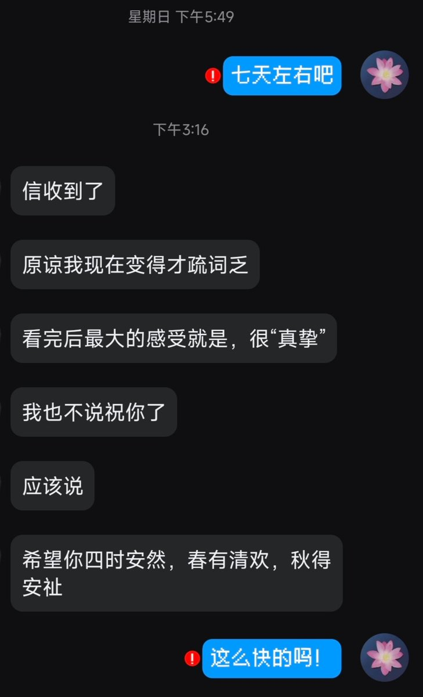
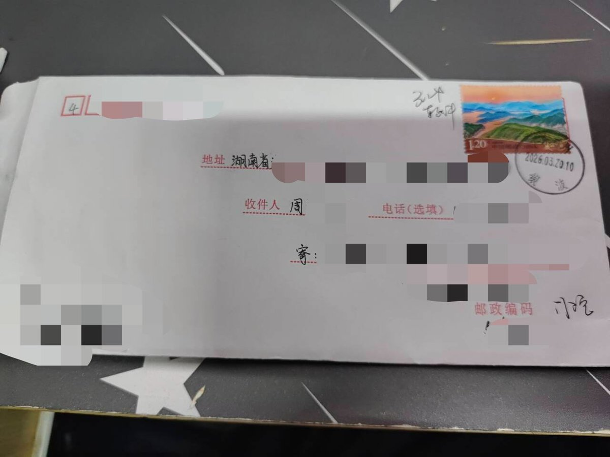
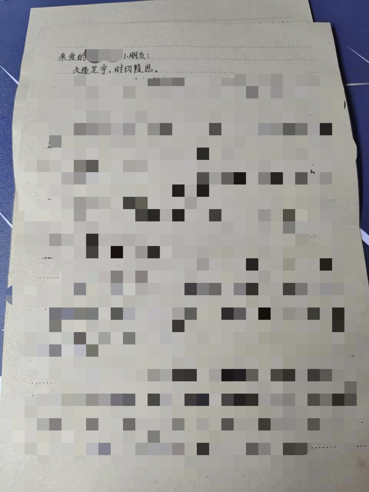
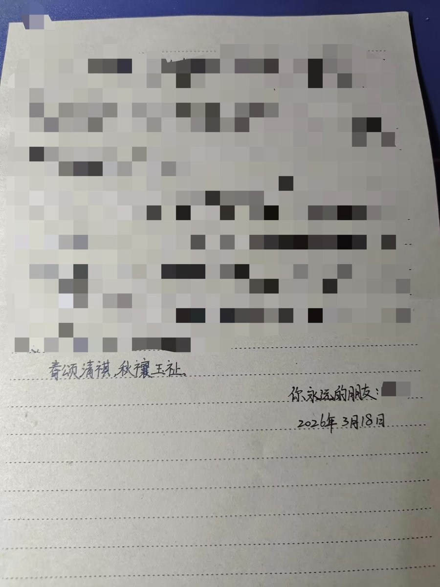
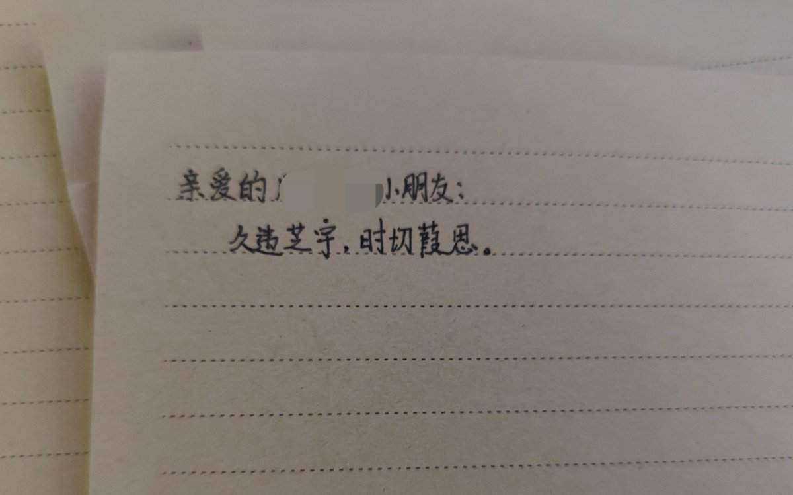

洛书瑶
@luoshuyao
哇我不知道为什么，我可能是上班把脑子上坏了，明明知道自己要写什么，愣是憋了一个月才憋出来这封信，想半天才能写得出一句话。但是这是认识九年的朋友呀，又不是没话说。
呜呜呜😭我一定是变傻了。我还搞手写信这种粉丝福利，光是给朋友写就想了这么久。之前早就答应好要给别人写的，所以先写的这封信……
我大概是太高估自己的精力了，不过答应好的事情一定要做到，我还是要写的





洛书瑶
@luoshuyao
准备给认识8年的好友写信中……太久没写字了不太会写了…… https://t.co/hpH7mWV8Su